The Dot Product of Two VectorsTích vô hướng của hai vectơ
Grade 10 · Topic: VectorsLớp 10 · Chủ đề: Vectơ
1Lesson IntroductionGiới thiệu bài học
Learning goalsMục tiêu bài học
By the end of this lesson you can:
Sau bài học này, em có thể:
find the angle between two vectors in a figure;
xác định góc giữa hai vectơ trong hình vẽ;
compute the dot product by definition and by coordinates;
tính tích vô hướng theo định nghĩa và theo tọa độ;
find lengths and angles, and test perpendicularity with the dot product;
tính độ dài, góc và xét hai vectơ vuông góc nhờ tích vô hướng;
apply the dot product to triangles and to the work of a force.
vận dụng tích vô hướng vào tam giác và tính công của lực.
2Mathematical VocabularyTừ vựng Toán học
angle between two vectors – draw both vectors from one point \(O\): \(\vec a=\overrightarrow{OA}\), \(\vec b=\overrightarrow{OB}\); the angle is \(\widehat{AOB}\), from \(0^\circ\) to \(180^\circ\).
góc giữa hai vectơ – vẽ hai vectơ chung gốc \(O\): \(\vec a=\overrightarrow{OA}\), \(\vec b=\overrightarrow{OB}\); góc là \(\widehat{AOB}\), từ \(0^\circ\) đến \(180^\circ\).
dot product (scalar product) – the number \(\vec a\cdot\vec b=|\vec a|\,|\vec b|\cos(\vec a,\vec b)\).
tích vô hướng – số \(\vec a\cdot\vec b=|\vec a|\,|\vec b|\cos(\vec a,\vec b)\).
scalar square – \(\vec a^2=\vec a\cdot\vec a=|\vec a|^2\).
bình phương vô hướng – \(\vec a^2=\vec a\cdot\vec a=|\vec a|^2\).
perpendicular vectors – vectors whose angle is \(90^\circ\); for non-zero vectors this means \(\vec a\cdot\vec b=0\).
hai vectơ vuông góc – hai vectơ có góc \(90^\circ\); với vectơ khác \(\vec 0\) điều này tương đương \(\vec a\cdot\vec b=0\).
work of a force – the dot product \(A=\vec F\cdot\vec d\) of the force and the displacement (joules).
công của lực – tích vô hướng \(A=\vec F\cdot\vec d\) của lực và vectơ dịch chuyển (đơn vị jun).
acute angle – an angle less than \(90^\circ\).
góc nhọn (nhỏ hơn 90°) – góc nhỏ hơn \(90^\circ\).
obtuse angle – an angle greater than \(90^\circ\) and less than \(180^\circ\).
góc tù – góc lớn hơn \(90^\circ\) và nhỏ hơn \(180^\circ\).
3Useful English PhrasesCụm từ tiếng Anh thường gặp
Find the dot product of the two vectors.
Tính tích vô hướng của hai vectơ.
Find the angle between the vectors.
Tìm góc giữa hai vectơ.
Show that the two vectors are perpendicular.
Chứng minh hai vectơ vuông góc.
Is the angle acute or obtuse?
Góc này nhọn hay tù?
Calculate the work done by the force.
Tính công của lực.
4Prerequisite ReviewÔn tập kiến thức nền
From Lesson 5 and Lesson 10: \(\cos0^\circ=1\), \(\cos60^\circ=\dfrac12\), \(\cos90^\circ=0\), \(\cos120^\circ=-\dfrac12\), \(\cos180^\circ=-1\); \(\cos45^\circ=\dfrac{\sqrt2}2\), \(\cos135^\circ=-\dfrac{\sqrt2}2\). If \(\vec u=(x;y)\) then \(|\vec u|=\sqrt{x^2+y^2}\).
Từ Bài 5 và Bài 10: \(\cos0^\circ=1\), \(\cos60^\circ=\dfrac12\), \(\cos90^\circ=0\), \(\cos120^\circ=-\dfrac12\), \(\cos180^\circ=-1\); \(\cos45^\circ=\dfrac{\sqrt2}2\), \(\cos135^\circ=-\dfrac{\sqrt2}2\). Nếu \(\vec u=(x;y)\) thì \(|\vec u|=\sqrt{x^2+y^2}\).
5TheoryLý thuyết
5.1 Angle between two vectorsGóc giữa hai vectơ
DefinitionĐịnh nghĩa
For non-zero \(\vec a\), \(\vec b\), take any point \(O\) and draw \(\overrightarrow{OA}=\vec a\), \(\overrightarrow{OB}=\vec b\). Then \((\vec a,\vec b)=\widehat{AOB}\), with \(0^\circ\le(\vec a,\vec b)\le180^\circ\). If the angle is \(90^\circ\) we write \(\vec a\perp\vec b\).
Với hai vectơ \(\vec a\), \(\vec b\) khác \(\vec 0\), lấy điểm \(O\) bất kì, vẽ \(\overrightarrow{OA}=\vec a\), \(\overrightarrow{OB}=\vec b\). Khi đó \((\vec a,\vec b)=\widehat{AOB}\), \(0^\circ\le(\vec a,\vec b)\le180^\circ\). Nếu góc bằng \(90^\circ\) thì \(\vec a\perp\vec b\).
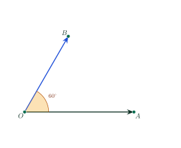
5.2 The dot productTích vô hướng của hai vectơ
Definition and propertiesĐịnh nghĩa và tính chất
The result is a number. If \(\vec a=\vec 0\) or \(\vec b=\vec 0\), then \(\vec a\cdot\vec b=0\).
Kết quả là một số. Nếu \(\vec a=\vec 0\) hoặc \(\vec b=\vec 0\) thì \(\vec a\cdot\vec b=0\).
\(\vec a\perp\vec b\iff\vec a\cdot\vec b=0\); \(\vec a^2=|\vec a|^2\).
\(\vec a\perp\vec b\iff\vec a\cdot\vec b=0\); bình phương vô hướng \(\vec a^2=|\vec a|^2\).
\(\vec a\cdot\vec b=\vec b\cdot\vec a\); \(\vec a\cdot(\vec b+\vec c)=\vec a\cdot\vec b+\vec a\cdot\vec c\); \((k\vec a)\cdot\vec b=k(\vec a\cdot\vec b)\).
\(\vec a\cdot\vec b=\vec b\cdot\vec a\); \(\vec a\cdot(\vec b+\vec c)=\vec a\cdot\vec b+\vec a\cdot\vec c\); \((k\vec a)\cdot\vec b=k(\vec a\cdot\vec b)\).
\((\vec a\pm\vec b)^2=\vec a^2\pm2\,\vec a\cdot\vec b+\vec b^2\).
\((\vec a\pm\vec b)^2=\vec a^2\pm2\,\vec a\cdot\vec b+\vec b^2\).
Sign of the dot productDấu của tích vô hướng
\(\vec a\cdot\vec b\gt0\): acute angle; \(\vec a\cdot\vec b=0\): right angle; \(\vec a\cdot\vec b\lt0\): obtuse angle (non-zero vectors).
\(\vec a\cdot\vec b\gt0\): góc nhọn; \(\vec a\cdot\vec b=0\): góc vuông; \(\vec a\cdot\vec b\lt0\): góc tù (hai vectơ khác \(\vec 0\)).
5.3 Dot product by coordinatesBiểu thức tọa độ của tích vô hướng
With \(\vec a=(x;y)\), \(\vec b=(x';y')\)Với \(\vec a=(x;y)\), \(\vec b=(x';y')\)
\(\vec a\perp\vec b\iff xx'+yy'=0\). In physics, the work of a constant force is \(A=\vec F\cdot\vec d=|\vec F|\,|\vec d|\cos\alpha\).
\(\vec a\perp\vec b\iff xx'+yy'=0\). Trong Vật lí, công của lực không đổi là \(A=\vec F\cdot\vec d=|\vec F|\,|\vec d|\cos\alpha\).
Watch out!Lưu ý
\((\overrightarrow{AB},\overrightarrow{BC})\) is not the angle \(\widehat{ABC}\) of the triangle; it is \(180^\circ-\widehat{ABC}\). Do not write \(\vec a\cdot\vec b\) as a vector, and never "divide" by a vector.
\((\overrightarrow{AB},\overrightarrow{BC})\) không phải góc \(\widehat{ABC}\) của tam giác mà bằng \(180^\circ-\widehat{ABC}\). Không viết \(\vec a\cdot\vec b\) thành vectơ và không "chia" cho một vectơ.
6Worked ExamplesVí dụ có lời giải
ExampleVí dụ 1BasicCơ bản – Angles in a squareGóc trong hình vuông
\(ABCD\) is a square with side \(a\). Find \((\overrightarrow{AB},\overrightarrow{AD})\), \((\overrightarrow{AB},\overrightarrow{AC})\), \((\overrightarrow{AB},\overrightarrow{CD})\) and \(\overrightarrow{AB}\cdot\overrightarrow{AC}\).
Cho hình vuông \(ABCD\) cạnh \(a\). Tìm \((\overrightarrow{AB},\overrightarrow{AD})\), \((\overrightarrow{AB},\overrightarrow{AC})\), \((\overrightarrow{AB},\overrightarrow{CD})\) và tính \(\overrightarrow{AB}\cdot\overrightarrow{AC}\).
Analysis: The first two pairs already start at \(A\). \(\overrightarrow{CD}\) has the opposite direction of \(\overrightarrow{AB}\).
Phân tích: Hai cặp đầu đã chung gốc \(A\). \(\overrightarrow{CD}\) ngược hướng với \(\overrightarrow{AB}\).
\((\overrightarrow{AB},\overrightarrow{AD})=90^\circ\); \((\overrightarrow{AB},\overrightarrow{AC})=45^\circ\) (diagonal); \((\overrightarrow{AB},\overrightarrow{CD})=180^\circ\).
\((\overrightarrow{AB},\overrightarrow{AD})=90^\circ\); \((\overrightarrow{AB},\overrightarrow{AC})=45^\circ\) (đường chéo); \((\overrightarrow{AB},\overrightarrow{CD})=180^\circ\).
\(\overrightarrow{AB}\cdot\overrightarrow{AC}=a\cdot a\sqrt2\cdot\cos45^\circ=a\cdot a\sqrt2\cdot\dfrac{\sqrt2}2\).
\(\overrightarrow{AB}\cdot\overrightarrow{AC}=a\cdot a\sqrt2\cdot\cos45^\circ=a\cdot a\sqrt2\cdot\dfrac{\sqrt2}2\).
\(90^\circ\), \(45^\circ\), \(180^\circ\); \(\overrightarrow{AB}\cdot\overrightarrow{AC}=a^2\).
\(90^\circ\), \(45^\circ\), \(180^\circ\); \(\overrightarrow{AB}\cdot\overrightarrow{AC}=a^2\).
ExampleVí dụ 2BasicCơ bản – Equilateral triangleTam giác đều
Triangle \(ABC\) is equilateral with side 4. Compute \(\overrightarrow{AB}\cdot\overrightarrow{AC}\) and \(\overrightarrow{AB}\cdot\overrightarrow{BC}\).
Cho tam giác đều \(ABC\) cạnh 4. Tính \(\overrightarrow{AB}\cdot\overrightarrow{AC}\) và \(\overrightarrow{AB}\cdot\overrightarrow{BC}\).
Analysis: \(\overrightarrow{AB}\), \(\overrightarrow{BC}\) do not start at the same point: the angle is \(180^\circ-60^\circ\).
Phân tích: \(\overrightarrow{AB}\), \(\overrightarrow{BC}\) không chung gốc: góc giữa chúng là \(180^\circ-60^\circ\).
\(\overrightarrow{AB}\cdot\overrightarrow{AC}=4\cdot4\cdot\cos60^\circ=8\).
\(\overrightarrow{AB}\cdot\overrightarrow{AC}=4\cdot4\cdot\cos60^\circ=8\).
\((\overrightarrow{AB},\overrightarrow{BC})=120^\circ\), so \(\overrightarrow{AB}\cdot\overrightarrow{BC}=4\cdot4\cdot\left(-\dfrac12\right)\).
\((\overrightarrow{AB},\overrightarrow{BC})=120^\circ\) nên \(\overrightarrow{AB}\cdot\overrightarrow{BC}=4\cdot4\cdot\left(-\dfrac12\right)\).
\(8\) and \(-8\).
\(8\) và \(-8\).
ExampleVí dụ 3IntermediateTrung bình – By coordinatesTính theo tọa độ
\(\vec a=(1;2)\), \(\vec b=(3;-1)\). Find \(\vec a\cdot\vec b\), \(\cos(\vec a,\vec b)\) and the angle (to 0.01°). Find \(m\) so that \(\vec c=(m;2)\) is perpendicular to \(\vec a\).
Cho \(\vec a=(1;2)\), \(\vec b=(3;-1)\). Tính \(\vec a\cdot\vec b\), \(\cos(\vec a,\vec b)\) và góc (làm tròn đến 0,01°). Tìm \(m\) để \(\vec c=(m;2)\) vuông góc với \(\vec a\).
Analysis: Use \(xx'+yy'\) and the lengths; perpendicular means the dot product is 0.
Phân tích: Dùng \(xx'+yy'\) và độ dài; vuông góc nghĩa là tích vô hướng bằng 0.
\(\vec a\cdot\vec b=1\cdot3+2\cdot(-1)=1\); \(|\vec a|=\sqrt5\), \(|\vec b|=\sqrt{10}\).
\(\vec a\cdot\vec b=1\cdot3+2\cdot(-1)=1\); \(|\vec a|=\sqrt5\), \(|\vec b|=\sqrt{10}\).
\(\cos(\vec a,\vec b)=\dfrac1{\sqrt5\cdot\sqrt{10}}=\dfrac{1}{5\sqrt2}=\dfrac{\sqrt2}{10}\), so the angle \(\approx81.87^\circ\).
\(\cos(\vec a,\vec b)=\dfrac1{\sqrt5\cdot\sqrt{10}}=\dfrac{1}{5\sqrt2}=\dfrac{\sqrt2}{10}\), nên góc \(\approx81{,}87^\circ\).
\(\vec a\cdot\vec c=m+4=0\).
\(\vec a\cdot\vec c=m+4=0\).
\(\vec a\cdot\vec b=1\), \(\cos=\dfrac{\sqrt2}{10}\), angle \(\approx81.87^\circ\); \(m=-4\).
\(\vec a\cdot\vec b=1\), \(\cos=\dfrac{\sqrt2}{10}\), góc \(\approx81{,}87^\circ\); \(m=-4\).
ExampleVí dụ 4IntermediateTrung bình – A right triangleTam giác vuông
\(A(1;1)\), \(B(3;2)\), \(C(0;3)\). Prove that triangle \(ABC\) is a right isosceles triangle and find its area.
Cho \(A(1;1)\), \(B(3;2)\), \(C(0;3)\). Chứng minh tam giác \(ABC\) vuông cân và tính diện tích.
Analysis: Compute \(\overrightarrow{AB}\cdot\overrightarrow{AC}\) and the two lengths.
Phân tích: Tính \(\overrightarrow{AB}\cdot\overrightarrow{AC}\) và hai độ dài.
\(\overrightarrow{AB}=(2;1)\), \(\overrightarrow{AC}=(-1;2)\), \(\overrightarrow{AB}\cdot\overrightarrow{AC}=-2+2=0\): right angle at \(A\).
\(\overrightarrow{AB}=(2;1)\), \(\overrightarrow{AC}=(-1;2)\), \(\overrightarrow{AB}\cdot\overrightarrow{AC}=-2+2=0\): vuông tại \(A\).
\(AB=AC=\sqrt5\): isosceles.
\(AB=AC=\sqrt5\): cân tại \(A\).
\(S=\dfrac12AB\cdot AC=\dfrac12\cdot5\).
\(S=\dfrac12AB\cdot AC=\dfrac12\cdot5\).
Right isosceles at \(A\); \(S=\dfrac52\).
Vuông cân tại \(A\); \(S=\dfrac52\).
ExampleVí dụ 5AdvancedNâng cao – Work of a forceCông của lực
A worker pulls a cart with a rope.
(a) The force is \(50\ \text{N}\) at \(30^\circ\) above the ground and the cart moves \(20\ \text{m}\).
(b) In coordinates, \(\vec F=(40;30)\) N and \(\vec d=(20;0)\) m. Find the work in each case.
Một công nhân kéo xe bằng dây.
(a) Lực \(50\ \text{N}\) hợp với mặt đường góc \(30^\circ\), xe đi \(20\ \text{m}\).
(b) Theo tọa độ, \(\vec F=(40;30)\) N và \(\vec d=(20;0)\) m. Tính công trong mỗi trường hợp.
Analysis: \(A=|\vec F|\,|\vec d|\cos\alpha\) or \(A=xx'+yy'\).
Phân tích: \(A=|\vec F|\,|\vec d|\cos\alpha\) hoặc \(A=xx'+yy'\).
(a) \(A=50\cdot20\cdot\cos30^\circ=500\sqrt3\approx866\ \text{J}\).
(a) \(A=50\cdot20\cdot\cos30^\circ=500\sqrt3\approx866\ \text{J}\).
(b) \(A=40\cdot20+30\cdot0=800\ \text{J}\). Only the part of the force along the motion does work.
(b) \(A=40\cdot20+30\cdot0=800\ \text{J}\). Chỉ thành phần lực theo hướng chuyển động mới sinh công.
(a) \(\approx866\ \text{J}\);
(b) \(800\ \text{J}\).
(a) \(\approx866\ \text{J}\);
(b) \(800\ \text{J}\).
7PracticeBài tập luyện tập
A. Multiple ChoiceA. Trắc nghiệm nhiều lựa chọn
Triangle \(ABC\) is equilateral with side \(6\). Then \(\overrightarrow{AB}\cdot\overrightarrow{AC}=\)…
Tam giác \(ABC\) đều cạnh \(6\). Khi đó \(\overrightarrow{AB}\cdot\overrightarrow{AC}=\)…
Answer: b. The angle between the vectors is \(60^\circ\): \(6^2\cos60^\circ=18\).
Đáp án b. Góc giữa hai vectơ là \(60^\circ\): \(6^2\cos60^\circ=18\).
\(\vec a=(2;\,3)\), \(\vec b=(4;\,-1)\). Then \(\vec a\cdot\vec b=\)…
Cho \(\vec a=(2;\,3)\), \(\vec b=(4;\,-1)\). Khi đó \(\vec a\cdot\vec b=\)…
Answer: d. \(xx'+yy'=5\).
Đáp án d. \(xx'+yy'=5\).
The angle between \(\vec u=(1;\,0)\) and \(\vec v=(2;\,2)\) is…
Góc giữa \(\vec u=(1;\,0)\) và \(\vec v=(2;\,2)\) bằng…
Answer: b. \(\cos(\vec u,\vec v)=\dfrac{2}{\sqrt{1}\cdot\sqrt{8}}\).
Đáp án b. \(\cos(\vec u,\vec v)=\dfrac{2}{\sqrt{1}\cdot\sqrt{8}}\).
\(ABCD\) is a square with side \(3\) (figure). Then \(\overrightarrow{AB}\cdot\overrightarrow{AC}=\)…
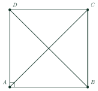
Hình vuông \(ABCD\) có cạnh \(3\) (hình vẽ). Khi đó \(\overrightarrow{AB}\cdot\overrightarrow{AC}=\)…
Answer: a. Use \(|\vec u||\vec v|\cos(\vec u,\vec v)\): result \(9\).
Đáp án a. Dùng \(|\vec u||\vec v|\cos(\vec u,\vec v)\): kết quả \(9\).
Triangle \(ABC\) is right-angled at \(A\) with \(AB=5\), \(AC=12\) (figure). Then \(\overrightarrow{BA}\cdot\overrightarrow{BC}=\)…
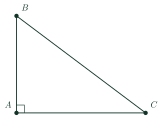
Tam giác \(ABC\) vuông tại \(A\) có \(AB=5\), \(AC=12\) (hình vẽ). Khi đó \(\overrightarrow{BA}\cdot\overrightarrow{BC}=\)…
Answer: b. Use \(\cos\) of the angle at the vertex (or the projection): result \(25\).
Đáp án b. Dùng côsin của góc tại đỉnh (hoặc hình chiếu): kết quả \(25\).
B. True or FalseB. Đúng hoặc sai
Three posts of a fence are at \(A(0;\,0)\), \(B(4;\,1)\), \(C(-1;\,4)\). The angle \(\widehat{BAC}\) is a right angle.
Ba cọc rào ở \(A(0;\,0)\), \(B(4;\,1)\), \(C(-1;\,4)\). Góc \(\widehat{BAC}\) là góc vuông.
\(\overrightarrow{AB}\cdot\overrightarrow{AC}=0\), so the angle is a right angle.
\(\overrightarrow{AB}\cdot\overrightarrow{AC}=0\) nên góc vuông.
\(|\vec a|=3\), \(|\vec b|=5\), \((\vec a,\vec b)=60^\circ\). Then \(|\vec a+\vec b|=7\).
Cho \(|\vec a|=3\), \(|\vec b|=5\), \((\vec a,\vec b)=60^\circ\). Khi đó \(|\vec a+\vec b|=7\).
\(|\vec a+\vec b|^2=9+25+2\cdot3\cdot5\cos60^\circ=49\), so \(|\vec a+\vec b|=7\).
\(|\vec a+\vec b|^2=9+25+2\cdot3\cdot5\cos60^\circ=49\) nên \(|\vec a+\vec b|=7\).
\(ABCD\) is a rectangle with \(AB\ne AD\) (figure). \(\overrightarrow{AB}\cdot\overrightarrow{CD}=AB^2\).
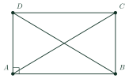
Cho hình chữ nhật \(ABCD\) có \(AB\ne AD\) (hình vẽ). \(\overrightarrow{AB}\cdot\overrightarrow{CD}=AB^2\).
The angle is \(180^\circ\): \(-AB^2\).
Góc giữa hai vectơ là \(180^\circ\): \(-AB^2\).
C. Short AnswerC. Trả lời ngắn
A sled is pulled with force \(\vec F=(30;\,20)\) (newtons) and moves by \(\vec d=(10;\,0)\) (meters). Find the work \(A=\vec F\cdot\vec d\) in joules.
Một xe trượt được kéo bởi lực \(\vec F=(30;\,20)\) (N) và dịch chuyển theo \(\vec d=(10;\,0)\) (m). Tính công \(A=\vec F\cdot\vec d\) (J).
Enter a number.
Nhập một số.
\(A=30\cdot10+20\cdot0=300\ \text{J}\).
\(A=30\cdot10+20\cdot0=300\ \text{J}\).
\(\vec g=(2;\,1)\) and \(\vec h=(3;\,m)\). Find \(m\) so that \(\vec g\perp\vec h\).
Cho \(\vec g=(2;\,1)\), \(\vec h=(3;\,m)\). Tìm \(m\) để \(\vec g\perp\vec h\).
Enter a number.
Nhập một số.
\(2\cdot3+1\,m=0\Rightarrow m=-6\).
\(2\cdot3+1\,m=0\Rightarrow m=-6\).
A. Multiple ChoiceA. Trắc nghiệm nhiều lựa chọn
Triangle \(ABC\) is equilateral with side \(4\). Then \(\overrightarrow{AB}\cdot\overrightarrow{BC}=\)…
Tam giác \(ABC\) đều cạnh \(4\). Khi đó \(\overrightarrow{AB}\cdot\overrightarrow{BC}=\)…
Answer: b. The angle between the vectors is \(120^\circ\): \(4^2\cos120^\circ=-8\).
Đáp án b. Góc giữa hai vectơ là \(120^\circ\): \(4^2\cos120^\circ=-8\).
\(\vec a=(-3;\,2)\), \(\vec b=(5;\,4)\). Then \(\vec a\cdot\vec b=\)…
Cho \(\vec a=(-3;\,2)\), \(\vec b=(5;\,4)\). Khi đó \(\vec a\cdot\vec b=\)…
Answer: a. \(xx'+yy'=-7\).
Đáp án a. \(xx'+yy'=-7\).
The angle between \(\vec u=(2;\,-1)\) and \(\vec v=(1;\,2)\) is…
Góc giữa \(\vec u=(2;\,-1)\) và \(\vec v=(1;\,2)\) bằng…
Answer: b. \(\cos(\vec u,\vec v)=\dfrac{0}{\sqrt{5}\cdot\sqrt{5}}\).
Đáp án b. \(\cos(\vec u,\vec v)=\dfrac{0}{\sqrt{5}\cdot\sqrt{5}}\).
\(ABCD\) is a square with side \(2\) (figure). Then \(\overrightarrow{AC}\cdot\overrightarrow{BD}=\)…
Hình vuông \(ABCD\) có cạnh \(2\) (hình vẽ). Khi đó \(\overrightarrow{AC}\cdot\overrightarrow{BD}=\)…
Answer: a. Use \(|\vec u||\vec v|\cos(\vec u,\vec v)\): result \(0\).
Đáp án a. Dùng \(|\vec u||\vec v|\cos(\vec u,\vec v)\): kết quả \(0\).
Triangle \(ABC\) is right-angled at \(A\) with \(AB=5\), \(AC=12\) (figure). Then \(\overrightarrow{CA}\cdot\overrightarrow{CB}=\)…
Tam giác \(ABC\) vuông tại \(A\) có \(AB=5\), \(AC=12\) (hình vẽ). Khi đó \(\overrightarrow{CA}\cdot\overrightarrow{CB}=\)…
Answer: c. Use \(\cos\) of the angle at the vertex (or the projection): result \(144\).
Đáp án c. Dùng côsin của góc tại đỉnh (hoặc hình chiếu): kết quả \(144\).
B. True or FalseB. Đúng hoặc sai
Three posts of a fence are at \(A(1;\,2)\), \(B(5;\,3)\), \(C(2;\,6)\). The angle \(\widehat{BAC}\) is obtuse.
Ba cọc rào ở \(A(1;\,2)\), \(B(5;\,3)\), \(C(2;\,6)\). Góc \(\widehat{BAC}\) là góc tù.
\(\overrightarrow{AB}\cdot\overrightarrow{AC}=8\), so the angle is acute.
\(\overrightarrow{AB}\cdot\overrightarrow{AC}=8\) nên góc nhọn.
\(|\vec a|=5\), \(|\vec b|=8\), \((\vec a,\vec b)=120^\circ\). Then \(|\vec a+\vec b|=8\).
Cho \(|\vec a|=5\), \(|\vec b|=8\), \((\vec a,\vec b)=120^\circ\). Khi đó \(|\vec a+\vec b|=8\).
\(|\vec a+\vec b|^2=25+64+2\cdot5\cdot8\cos120^\circ=49\), so \(|\vec a+\vec b|=7\).
\(|\vec a+\vec b|^2=25+64+2\cdot5\cdot8\cos120^\circ=49\) nên \(|\vec a+\vec b|=7\).
\(ABCD\) is a rectangle with \(AB\ne AD\) (figure). \(\overrightarrow{AB}\cdot\overrightarrow{DC}=AB^2\).
Cho hình chữ nhật \(ABCD\) có \(AB\ne AD\) (hình vẽ). \(\overrightarrow{AB}\cdot\overrightarrow{DC}=AB^2\).
\(\overrightarrow{DC}=\overrightarrow{AB}\).
\(\overrightarrow{DC}=\overrightarrow{AB}\).
C. Short AnswerC. Trả lời ngắn
A sled is pulled with force \(\vec F=(50;\,-10)\) (newtons) and moves by \(\vec d=(12;\,5)\) (meters). Find the work \(A=\vec F\cdot\vec d\) in joules.
Một xe trượt được kéo bởi lực \(\vec F=(50;\,-10)\) (N) và dịch chuyển theo \(\vec d=(12;\,5)\) (m). Tính công \(A=\vec F\cdot\vec d\) (J).
Enter a number.
Nhập một số.
\(A=50\cdot12-10\cdot5=550\ \text{J}\).
\(A=50\cdot12-10\cdot5=550\ \text{J}\).
\(\vec g=(3;\,-2)\) and \(\vec h=(4;\,m)\). Find \(m\) so that \(\vec g\perp\vec h\).
Cho \(\vec g=(3;\,-2)\), \(\vec h=(4;\,m)\). Tìm \(m\) để \(\vec g\perp\vec h\).
Enter a number.
Nhập một số.
\(3\cdot4-2\,m=0\Rightarrow m=6\).
\(3\cdot4-2\,m=0\Rightarrow m=6\).
A. Multiple ChoiceA. Trắc nghiệm nhiều lựa chọn
Triangle \(ABC\) is equilateral with side \(10\). Then \(\overrightarrow{CA}\cdot\overrightarrow{CB}=\)…
Tam giác \(ABC\) đều cạnh \(10\). Khi đó \(\overrightarrow{CA}\cdot\overrightarrow{CB}=\)…
Answer: b. The angle between the vectors is \(60^\circ\): \(10^2\cos60^\circ=50\).
Đáp án b. Góc giữa hai vectơ là \(60^\circ\): \(10^2\cos60^\circ=50\).
\(\vec a=(4;\,-5)\), \(\vec b=(-2;\,-3)\). Then \(\vec a\cdot\vec b=\)…
Cho \(\vec a=(4;\,-5)\), \(\vec b=(-2;\,-3)\). Khi đó \(\vec a\cdot\vec b=\)…
Answer: d. \(xx'+yy'=7\).
Đáp án d. \(xx'+yy'=7\).
The angle between \(\vec u=(2;\,1)\) and \(\vec v=(-3;\,1)\) is…
Góc giữa \(\vec u=(2;\,1)\) và \(\vec v=(-3;\,1)\) bằng…
Answer: c. \(\cos(\vec u,\vec v)=\dfrac{-5}{\sqrt{5}\cdot\sqrt{10}}\).
Đáp án c. \(\cos(\vec u,\vec v)=\dfrac{-5}{\sqrt{5}\cdot\sqrt{10}}\).
\(ABCD\) is a square with side \(4\) (figure). Then \(\overrightarrow{AB}\cdot\overrightarrow{CD}=\)…
Hình vuông \(ABCD\) có cạnh \(4\) (hình vẽ). Khi đó \(\overrightarrow{AB}\cdot\overrightarrow{CD}=\)…
Answer: c. Use \(|\vec u||\vec v|\cos(\vec u,\vec v)\): result \(-16\).
Đáp án c. Dùng \(|\vec u||\vec v|\cos(\vec u,\vec v)\): kết quả \(-16\).
Triangle \(ABC\) is right-angled at \(A\) with \(AB=7\), \(AC=24\) (figure). Then \(\overrightarrow{AB}\cdot\overrightarrow{BC}=\)…
Tam giác \(ABC\) vuông tại \(A\) có \(AB=7\), \(AC=24\) (hình vẽ). Khi đó \(\overrightarrow{AB}\cdot\overrightarrow{BC}=\)…
Answer: c. Use \(\cos\) of the angle at the vertex (or the projection): result \(-49\).
Đáp án c. Dùng côsin của góc tại đỉnh (hoặc hình chiếu): kết quả \(-49\).
B. True or FalseB. Đúng hoặc sai
Three posts of a fence are at \(A(-2;\,1)\), \(B(3;\,2)\), \(C(0;\,5)\). The angle \(\widehat{BAC}\) is acute.
Ba cọc rào ở \(A(-2;\,1)\), \(B(3;\,2)\), \(C(0;\,5)\). Góc \(\widehat{BAC}\) là góc nhọn.
\(\overrightarrow{AB}\cdot\overrightarrow{AC}=14\), so the angle is acute.
\(\overrightarrow{AB}\cdot\overrightarrow{AC}=14\) nên góc nhọn.
\(|\vec a|=7\), \(|\vec b|=8\), \((\vec a,\vec b)=60^\circ\). Then \(|\vec a+\vec b|=13\).
Cho \(|\vec a|=7\), \(|\vec b|=8\), \((\vec a,\vec b)=60^\circ\). Khi đó \(|\vec a+\vec b|=13\).
\(|\vec a+\vec b|^2=49+64+2\cdot7\cdot8\cos60^\circ=169\), so \(|\vec a+\vec b|=13\).
\(|\vec a+\vec b|^2=49+64+2\cdot7\cdot8\cos60^\circ=169\) nên \(|\vec a+\vec b|=13\).
\(ABCD\) is a rectangle with \(AB\ne AD\) (figure). \(\overrightarrow{BA}\cdot\overrightarrow{BC}\gt0\).
Cho hình chữ nhật \(ABCD\) có \(AB\ne AD\) (hình vẽ). \(\overrightarrow{BA}\cdot\overrightarrow{BC}\gt0\).
\(BA\perp BC\): the product is \(0\).
\(BA\perp BC\): tích bằng \(0\).
C. Short AnswerC. Trả lời ngắn
A sled is pulled with force \(\vec F=(-20;\,60)\) (newtons) and moves by \(\vec d=(6;\,15)\) (meters). Find the work \(A=\vec F\cdot\vec d\) in joules.
Một xe trượt được kéo bởi lực \(\vec F=(-20;\,60)\) (N) và dịch chuyển theo \(\vec d=(6;\,15)\) (m). Tính công \(A=\vec F\cdot\vec d\) (J).
Enter a number.
Nhập một số.
\(A=-20\cdot6+60\cdot15=780\ \text{J}\).
\(A=-20\cdot6+60\cdot15=780\ \text{J}\).
\(\vec g=(-4;\,3)\) and \(\vec h=(6;\,m)\). Find \(m\) so that \(\vec g\perp\vec h\).
Cho \(\vec g=(-4;\,3)\), \(\vec h=(6;\,m)\). Tìm \(m\) để \(\vec g\perp\vec h\).
Enter a number.
Nhập một số.
\(-4\cdot6+3\,m=0\Rightarrow m=8\).
\(-4\cdot6+3\,m=0\Rightarrow m=8\).
D. Self-practice: Multiple ChoiceD. Tự luyện: trắc nghiệm
In triangle \(ABC\), \(H\) is the foot of the altitude from \(A\), \(BH=3\), \(HC=3\) (figure). Using projections, \(\overrightarrow{BA}\cdot\overrightarrow{BC}=\)…
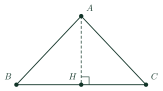
Trong tam giác \(ABC\), \(H\) là chân đường cao kẻ từ \(A\), \(BH=3\), \(HC=3\) (hình vẽ). Dùng hình chiếu, \(\overrightarrow{BA}\cdot\overrightarrow{BC}=\)…
Answer: d. The projection of \(\overrightarrow{BA}\) on \(BC\) is \(\overrightarrow{BH}\): \(BH\cdot BC=3\cdot6=18\).
Đáp án d. Hình chiếu của \(\overrightarrow{BA}\) lên \(BC\) là \(\overrightarrow{BH}\): \(BH\cdot BC=3\cdot6=18\).
\(|\vec a|=5\), \(|\vec b|=8\), \((\vec a,\vec b)=60^\circ\) (figure). Then \(|\vec a-\vec b|=\)…
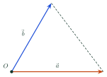
\(|\vec a|=5\), \(|\vec b|=8\), \((\vec a,\vec b)=60^\circ\) (hình vẽ). Khi đó \(|\vec a-\vec b|=\)…
Answer: d. \(|\vec a-\vec b|^2=25+64-2\cdot5\cdot8\cos60^\circ=49\).
Đáp án d. \(|\vec a-\vec b|^2=25+64-2\cdot5\cdot8\cos60^\circ=49\).
Triangle \(ABC\) is equilateral with side \(8\) (figure). A student wrote: \(\overrightarrow{AB}\cdot\overrightarrow{BC}=8\cdot8\cdot\cos60^\circ=32\). Which comment is correct?
Tam giác \(ABC\) đều cạnh \(8\) (hình vẽ). Một bạn viết: \(\overrightarrow{AB}\cdot\overrightarrow{BC}=8\cdot8\cdot\cos60^\circ=32\). Nhận xét nào đúng?
Answer: b. Put the two vectors at a common start: the angle is \(180^\circ-60^\circ=120^\circ\), result \(-32\).
Đáp án b. Đặt hai vectơ chung điểm đầu: góc là \(180^\circ-60^\circ=120^\circ\), kết quả \(-32\).
\(\vec a=(2;\,3)\), \(\vec b=(m;\,1)\). How many integers \(m\in[-5;\,5]\) make the angle between \(\vec a\) and \(\vec b\) acute?
\(\vec a=(2;\,3)\), \(\vec b=(m;\,1)\). Có bao nhiêu số nguyên \(m\in[-5;\,5]\) để góc giữa \(\vec a\) và \(\vec b\) là góc nhọn?
Answer: c. Need \(\vec a\cdot\vec b=2m+3\gt0\): 7 values.
Đáp án c. Cần \(\vec a\cdot\vec b=2m+3\gt0\): có 7 giá trị.
Triangle \(ABC\) is shown on the coordinate grid. Using the dot product, the triangle is…
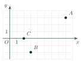
Tam giác \(ABC\) được biểu diễn trên lưới tọa độ. Dùng tích vô hướng, tam giác đó…
Answer: b. At \(C\) the two side vectors have dot product \(0\).
Đáp án b. Tại \(C\) hai vectơ cạnh có tích vô hướng bằng \(0\).
\(|\vec a|=3\), \(|\vec b|=6\) and \(|\vec a+\vec b|^2=61\). Then \(\vec a\cdot\vec b=\)…
\(|\vec a|=3\), \(|\vec b|=6\) và \(|\vec a+\vec b|^2=61\). Khi đó \(\vec a\cdot\vec b=\)…
Answer: a. \(|\vec a+\vec b|^2=9+36+2\vec a\cdot\vec b\Rightarrow\vec a\cdot\vec b=8\).
Đáp án a. \(|\vec a+\vec b|^2=9+36+2\vec a\cdot\vec b\Rightarrow\vec a\cdot\vec b=8\).
The work of a force is \(A=\vec F\cdot\vec d\). In which situation is the work of the named force equal to \(0\)? (The force is the one that holds or pulls.)
Công của lực là \(A=\vec F\cdot\vec d\). Trường hợp nào công của lực được nhắc tới bằng \(0\)? (Lực là lực nâng hoặc kéo.)
Answer: a. There the force is perpendicular to the displacement.
Đáp án a. Ở trường hợp đó lực vuông góc với độ dời.
\(ABCD\) is a rectangle with \(AB=5\), \(AD=8\) (figure). Then \(\overrightarrow{AC}\cdot\overrightarrow{BD}=\)…
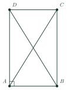
Hình chữ nhật \(ABCD\) có \(AB=5\), \(AD=8\) (hình vẽ). Khi đó \(\overrightarrow{AC}\cdot\overrightarrow{BD}=\)…
Answer: a. \(\overrightarrow{AC}=\overrightarrow{AB}+\overrightarrow{AD}\), \(\overrightarrow{BD}=\overrightarrow{AD}-\overrightarrow{AB}\): \(\overrightarrow{AC}\cdot\overrightarrow{BD}=AD^2-AB^2=39\).
Đáp án a. \(\overrightarrow{AC}=\overrightarrow{AB}+\overrightarrow{AD}\), \(\overrightarrow{BD}=\overrightarrow{AD}-\overrightarrow{AB}\): \(\overrightarrow{AC}\cdot\overrightarrow{BD}=AD^2-AB^2=39\).
D. Self-practice: Multiple ChoiceD. Tự luyện: trắc nghiệm
In triangle \(ABC\), \(H\) is the foot of the altitude from \(A\), \(BH=2\), \(HC=4\) (figure). Using projections, \(\overrightarrow{BA}\cdot\overrightarrow{BC}=\)…
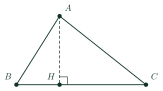
Trong tam giác \(ABC\), \(H\) là chân đường cao kẻ từ \(A\), \(BH=2\), \(HC=4\) (hình vẽ). Dùng hình chiếu, \(\overrightarrow{BA}\cdot\overrightarrow{BC}=\)…
Answer: b. The projection of \(\overrightarrow{BA}\) on \(BC\) is \(\overrightarrow{BH}\): \(BH\cdot BC=2\cdot6=12\).
Đáp án b. Hình chiếu của \(\overrightarrow{BA}\) lên \(BC\) là \(\overrightarrow{BH}\): \(BH\cdot BC=2\cdot6=12\).
\(|\vec a|=2\), \(|\vec b|=6\), \((\vec a,\vec b)=120^\circ\) (figure). Then \(|\vec a-\vec b|=\)…
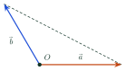
\(|\vec a|=2\), \(|\vec b|=6\), \((\vec a,\vec b)=120^\circ\) (hình vẽ). Khi đó \(|\vec a-\vec b|=\)…
Answer: d. \(|\vec a-\vec b|^2=4+36-2\cdot2\cdot6\cos120^\circ=52\).
Đáp án d. \(|\vec a-\vec b|^2=4+36-2\cdot2\cdot6\cos120^\circ=52\).
Triangle \(ABC\) is equilateral with side \(6\) (figure). A student wrote: \(\overrightarrow{BC}\cdot\overrightarrow{CA}=6\cdot6\cdot\cos60^\circ=18\). Which comment is correct?
Tam giác \(ABC\) đều cạnh \(6\) (hình vẽ). Một bạn viết: \(\overrightarrow{BC}\cdot\overrightarrow{CA}=6\cdot6\cdot\cos60^\circ=18\). Nhận xét nào đúng?
Answer: b. Put the two vectors at a common start: the angle is \(180^\circ-60^\circ=120^\circ\), result \(-18\).
Đáp án b. Đặt hai vectơ chung điểm đầu: góc là \(180^\circ-60^\circ=120^\circ\), kết quả \(-18\).
For \(\vec a=(1;\,3)\) and \(\vec b=(m;\,1)\), count the integers \(m\) in \([-5;\,5]\) such that \((\vec a,\vec b)\lt90^\circ\).
Với \(\vec a=(1;\,3)\), \(\vec b=(m;\,1)\), đếm các số nguyên \(m\) thuộc \([-5;\,5]\) sao cho \((\vec a,\vec b)\lt90^\circ\).
Answer: c. Need \(\vec a\cdot\vec b=1m+3\gt0\): 8 values.
Đáp án c. Cần \(\vec a\cdot\vec b=1m+3\gt0\): có 8 giá trị.
Use dot products to classify triangle \(ABC\) on the grid. It is…
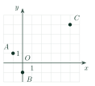
Dùng tích vô hướng để xét tam giác \(ABC\) trên lưới. Tam giác đó…
Answer: a. At \(A\) the two side vectors have dot product \(0\).
Đáp án a. Tại \(A\) hai vectơ cạnh có tích vô hướng bằng \(0\).
\(|\vec a|=3\), \(|\vec b|=6\) and \(|\vec a-\vec b|^2=53\). Then \(\vec a\cdot\vec b=\)…
\(|\vec a|=3\), \(|\vec b|=6\) và \(|\vec a-\vec b|^2=53\). Khi đó \(\vec a\cdot\vec b=\)…
Answer: d. \(|\vec a-\vec b|^2=9+36-2\vec a\cdot\vec b\Rightarrow\vec a\cdot\vec b=-4\).
Đáp án d. \(|\vec a-\vec b|^2=9+36-2\vec a\cdot\vec b\Rightarrow\vec a\cdot\vec b=-4\).
Work \(A=\vec F\cdot\vec d\) equals \(0\) when \(\vec F\perp\vec d\). Which situation gives zero work?
Công \(A=\vec F\cdot\vec d\) bằng \(0\) khi \(\vec F\perp\vec d\). Trường hợp nào cho công bằng không?
Answer: c. There the force is perpendicular to the displacement.
Đáp án c. Ở trường hợp đó lực vuông góc với độ dời.
\(ABCD\) is a rectangle with \(AB=2\), \(AD=4\) (figure). Then \(\overrightarrow{BD}\cdot\overrightarrow{CA}=\)…
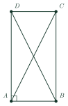
Hình chữ nhật \(ABCD\) có \(AB=2\), \(AD=4\) (hình vẽ). Khi đó \(\overrightarrow{BD}\cdot\overrightarrow{CA}=\)…
Answer: b. \(\overrightarrow{AC}=\overrightarrow{AB}+\overrightarrow{AD}\), \(\overrightarrow{BD}=\overrightarrow{AD}-\overrightarrow{AB}\): \(\overrightarrow{AC}\cdot\overrightarrow{BD}=AD^2-AB^2=12\).
Đáp án b. \(\overrightarrow{AC}=\overrightarrow{AB}+\overrightarrow{AD}\), \(\overrightarrow{BD}=\overrightarrow{AD}-\overrightarrow{AB}\): \(\overrightarrow{AC}\cdot\overrightarrow{BD}=AD^2-AB^2=12\).
D. Self-practice: Multiple ChoiceD. Tự luyện: trắc nghiệm
In triangle \(ABC\), \(H\) is the foot of the altitude from \(A\), \(BH=4\), \(HC=2\) (figure). Using projections, \(\overrightarrow{BA}\cdot\overrightarrow{BC}=\)…
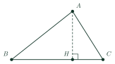
Trong tam giác \(ABC\), \(H\) là chân đường cao kẻ từ \(A\), \(BH=4\), \(HC=2\) (hình vẽ). Dùng hình chiếu, \(\overrightarrow{BA}\cdot\overrightarrow{BC}=\)…
Answer: a. The projection of \(\overrightarrow{BA}\) on \(BC\) is \(\overrightarrow{BH}\): \(BH\cdot BC=4\cdot6=24\).
Đáp án a. Hình chiếu của \(\overrightarrow{BA}\) lên \(BC\) là \(\overrightarrow{BH}\): \(BH\cdot BC=4\cdot6=24\).
\(|\vec a|=4\), \(|\vec b|=6\), \((\vec a,\vec b)=90^\circ\) (figure). Then \(|\vec a-\vec b|=\)…
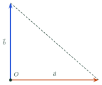
\(|\vec a|=4\), \(|\vec b|=6\), \((\vec a,\vec b)=90^\circ\) (hình vẽ). Khi đó \(|\vec a-\vec b|=\)…
Answer: b. \(|\vec a-\vec b|^2=16+36-2\cdot4\cdot6\cos90^\circ=52\).
Đáp án b. \(|\vec a-\vec b|^2=16+36-2\cdot4\cdot6\cos90^\circ=52\).
Triangle \(ABC\) is equilateral with side \(2\) (figure). A student wrote: \(\overrightarrow{CA}\cdot\overrightarrow{AB}=2\cdot2\cdot\cos60^\circ=2\). Which comment is correct?
Tam giác \(ABC\) đều cạnh \(2\) (hình vẽ). Một bạn viết: \(\overrightarrow{CA}\cdot\overrightarrow{AB}=2\cdot2\cdot\cos60^\circ=2\). Nhận xét nào đúng?
Answer: d. Put the two vectors at a common start: the angle is \(180^\circ-60^\circ=120^\circ\), result \(-2\).
Đáp án d. Đặt hai vectơ chung điểm đầu: góc là \(180^\circ-60^\circ=120^\circ\), kết quả \(-2\).
Count the integers \(m\) from \(-5\) to \(5\) with \((\vec a,\vec b)\) acute, where \(\vec a=(2;\,1)\), \(\vec b=(m;\,1)\).
Đếm các số nguyên \(m\) từ \(-5\) đến \(5\) để \((\vec a,\vec b)\) là góc nhọn, với \(\vec a=(2;\,1)\), \(\vec b=(m;\,1)\).
Answer: b. Need \(\vec a\cdot\vec b=2m+1\gt0\) and \(\vec b\) not in the same direction as \(\vec a\) (\(m\ne2\)): 5 values.
Đáp án b. Cần \(\vec a\cdot\vec b=2m+1\gt0\) và \(\vec b\) không cùng hướng với \(\vec a\) (\(m\ne2\)): có 5 giá trị.
Read \(A\), \(B\), \(C\) from the grid. The triangle \(ABC\) is…
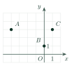
Đọc tọa độ \(A\), \(B\), \(C\) trên lưới. Tam giác \(ABC\)…
Answer: c. At \(B\) the two side vectors have dot product \(0\).
Đáp án c. Tại \(B\) hai vectơ cạnh có tích vô hướng bằng \(0\).
\(|\vec a|=3\), \(|\vec b|=6\) and \(|\vec a+\vec b|^2=65\). Find the dot product \(\vec a\cdot\vec b\).
\(|\vec a|=3\), \(|\vec b|=6\) và \(|\vec a+\vec b|^2=65\). Tính tích vô hướng \(\vec a\cdot\vec b\).
Answer: d. \(|\vec a+\vec b|^2=9+36+2\vec a\cdot\vec b\Rightarrow\vec a\cdot\vec b=10\).
Đáp án d. \(|\vec a+\vec b|^2=9+36+2\vec a\cdot\vec b\Rightarrow\vec a\cdot\vec b=10\).
Choose the situation where the force does no work (\(\vec F\cdot\vec d=0\)).
Chọn trường hợp lực không sinh công (\(\vec F\cdot\vec d=0\)).
Answer: c. There the force is perpendicular to the displacement.
Đáp án c. Ở trường hợp đó lực vuông góc với độ dời.
\(ABCD\) is a rectangle with \(AB=2\), \(AD=4\) (figure). Then \(\overrightarrow{AC}\cdot\overrightarrow{BD}=\)…
Hình chữ nhật \(ABCD\) có \(AB=2\), \(AD=4\) (hình vẽ). Khi đó \(\overrightarrow{AC}\cdot\overrightarrow{BD}=\)…
Answer: b. \(\overrightarrow{AC}=\overrightarrow{AB}+\overrightarrow{AD}\), \(\overrightarrow{BD}=\overrightarrow{AD}-\overrightarrow{AB}\): \(\overrightarrow{AC}\cdot\overrightarrow{BD}=AD^2-AB^2=12\).
Đáp án b. \(\overrightarrow{AC}=\overrightarrow{AB}+\overrightarrow{AD}\), \(\overrightarrow{BD}=\overrightarrow{AD}-\overrightarrow{AB}\): \(\overrightarrow{AC}\cdot\overrightarrow{BD}=AD^2-AB^2=12\).
8Common MistakesLỗi thường gặp
Wrong angle for vectors that do not share a start point. \((\overrightarrow{AB},\overrightarrow{BC})=180^\circ-\widehat{B}\).
Lấy sai góc khi hai vectơ không chung gốc. \((\overrightarrow{AB},\overrightarrow{BC})=180^\circ-\widehat{B}\).
Cross-multiplying. \(\vec a\cdot\vec b=xx'+yy'\), not \(xy'+x'y\).
Nhân chéo. \(\vec a\cdot\vec b=xx'+yy'\), không phải \(xy'+x'y\).
Forgetting the square root. \(|\vec a+\vec b|^2=\dots\); take the square root at the end.
Quên lấy căn. \(|\vec a+\vec b|^2=\dots\); cuối cùng phải khai căn.
Sign of the cosine. A negative dot product means an obtuse angle, not a mistake.
Dấu của côsin. Tích vô hướng âm nghĩa là góc tù, không phải tính sai.
9Lesson SummaryTổng kết
\(\vec a\cdot\vec b=|\vec a|\,|\vec b|\cos(\vec a,\vec b)\); the result is a number.
\(\vec a\cdot\vec b=|\vec a|\,|\vec b|\cos(\vec a,\vec b)\); kết quả là một số.
\(\vec a\cdot\vec b=xx'+yy'\); \(\cos(\vec a,\vec b)=\dfrac{xx'+yy'}{|\vec a|\,|\vec b|}\).
\(\vec a\cdot\vec b=xx'+yy'\); \(\cos(\vec a,\vec b)=\dfrac{xx'+yy'}{|\vec a|\,|\vec b|}\).
\(\vec a\perp\vec b\iff\vec a\cdot\vec b=0\); \(\vec a^2=|\vec a|^2\); \((\vec a\pm\vec b)^2=\vec a^2\pm2\vec a\cdot\vec b+\vec b^2\).
\(\vec a\perp\vec b\iff\vec a\cdot\vec b=0\); \(\vec a^2=|\vec a|^2\); \((\vec a\pm\vec b)^2=\vec a^2\pm2\vec a\cdot\vec b+\vec b^2\).
Work: \(A=\vec F\cdot\vec d\). Key words: dot product, angle, perpendicular, acute, obtuse.
Công: \(A=\vec F\cdot\vec d\). Từ cần nhớ (chạm vào để xem tiếng Anh): tích vô hướng của hai vectơ; góc; vuông góc; nhọn; tù.